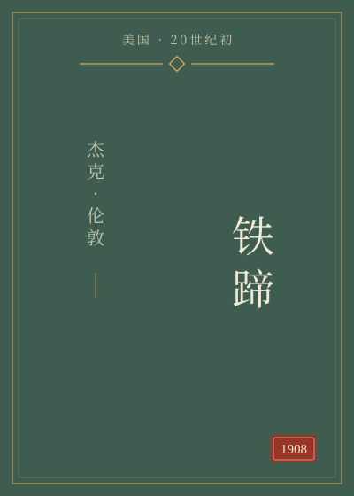

铁蹄
一、基本信息
| 作者 | 杰克·伦敦 |
|---|---|
| 成书/出版 | 1908年（Britannica B407：The Iron Heel (1908)——'a fantasy of the future that is a terrifying anticipation of fascism'） Jack London — Encyclopaedia Britannica（百科全书） |
| 国别/地区 | 美国 |
| 时代 | 近代 · 20世纪初 |
| 体裁 | 长篇小说 |
| 语言 | 英语 |
《铁蹄》预言结构图（主题·结构图）
二、创作背景
Britannica（B407）：The Iron Heel——'a fantasy of the future that is a terrifying anticipation of fascism'（对未来幻想——法西斯主义的可怖预言）。
Britannica（B407）：伦敦——1894年'became a militant socialist'——'maintained his socialist beliefs almost to the end of his life'。
题材（通说待核）：寡头'铁蹄'与工人起义——手稿残卷的框形叙事。
三、内容脉络
（通说待核）'铁蹄'寡头政权的镇压与芝加哥暴动。
（通说待核）'手稿'在'七百年后'被释读的框架。
四、主要人物表
| 人物 | 身份 | 说明 |
|---|---|---|
| 欧内斯特·埃弗哈德 | 社会主义者 | （通说待核） |
| 艾薇丝 | 妻子/记录者 | （通说待核） |
五、主题与艺术特点
- '法西斯主义的可怖预言'（B407）。
- 寡头政治的幻象（书名语境——通说待核）。
- '手稿残卷'的框架（通说待核）。
六、影响与评论
- Britannica：'a terrifying anticipation of fascism'（B407）。
Jack London — Encyclopaedia Britannica（百科全书） - Britannica：'militant socialist'（B407 交叉）。
Jack London — Encyclopaedia Britannica（百科全书）
七、阅读建议
难点
- 未来史框架。
- 1900年代美国劳工运动。
- 《铁蹄》中译本（人民文学等——通说待核）。
- 英文原版（公有领域状态待核）。
伦敦政治篇；与《马丁·伊登》对读。
八、待核实
- 埃弗哈德/艾薇丝人名核对（通说）。
- 1908年出版细节待核。
- '手稿'框架细节待核。